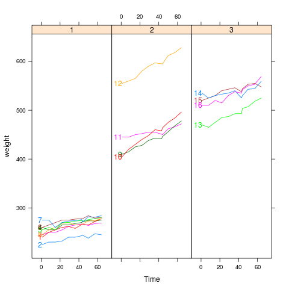
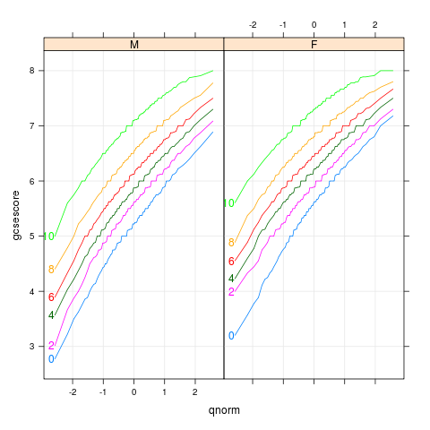
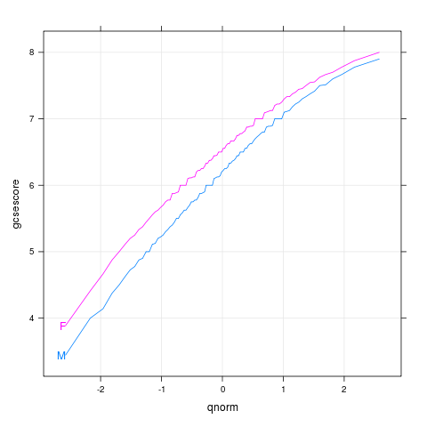
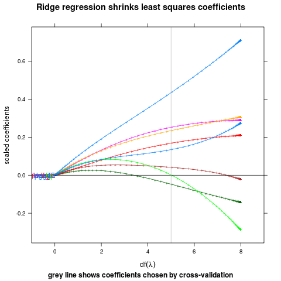
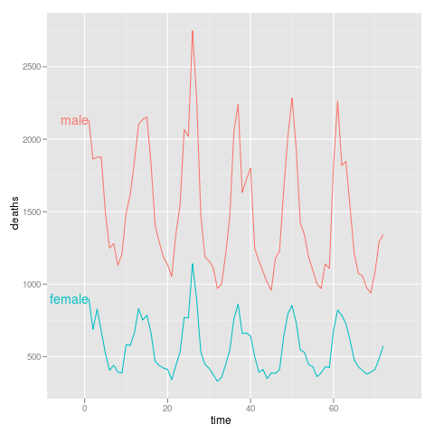

|  |
bodyweight
data(BodyWeight,package="nlme")
library(lattice)
p <- xyplot(weight~Time|Diet,BodyWeight,groups=Rat,type='l',
layout=c(3,1),xlim=c(-10,75))
direct.label(p,"first.points")
|
|  |
chemqqmathscore
data(Chem97,package="mlmRev")
library(lattice)
p <- qqmath(~gcsescore|gender,Chem97,groups=factor(score),
type=c('l','g'),f.value=ppoints(100))
direct.label(p,"first.points")
|
|  |
chemqqmathsex
data(Chem97,package="mlmRev")
library(lattice)
p <- qqmath(~gcsescore,Chem97,groups=gender,
type=c("l","g"),f.value=ppoints(100))
direct.label(p,"first.points")
|
|  |
ridge
## complicated ridge regression lineplot ex. fig 3.8 from Elements of
## Statistical Learning, Hastie et al.
myridge <- function(f,data,lambda=c(exp(-seq(-15,15,l=200)),0)){
require(MASS)
fit <- lm.ridge(f,data,lambda=lambda)
X <- data[-which(names(data)==as.character(f[[2]]))]
Xs <- svd(scale(X)) ## my d's should come from the scaled matrix
dsq <- Xs$d^2
## make the x axis degrees of freedom
df <- sapply(lambda,function(l)sum(dsq/(dsq+l)))
D <- data.frame(t(fit$coef),lambda,df) # scaled coefs
molt <- melt(D,id=c("lambda","df"))
## add in the points for df=0
limpts <- transform(subset(molt,lambda==0),lambda=Inf,df=0,value=0)
rbind(limpts,molt)
}
data(prostate,package="ElemStatLearn")
pros <- subset(prostate,train==TRUE,select=-train)
m <- myridge(lpsa~.,pros)
library(lattice)
p <- xyplot(value~df,m,groups=variable,type="o",pch="+",
panel=function(...){
panel.xyplot(...)
panel.abline(h=0)
panel.abline(v=5,col="grey")
},
xlim=c(-1,9),
main="Ridge regression shrinks least squares coefficients",
ylab="scaled coefficients",
sub="grey line shows coefficients chosen by cross-validation",
xlab=expression(df(lambda)))
direct.label(p,"first.points")
|
|  |
sexdeaths
library(ggplot2)
dts <- cbind(male=mdeaths,female=fdeaths,time=1:length(mdeaths))
ddf <- melt(as.data.frame(dts),id="time")
names(ddf) <- c("time","sex","deaths")
p <- qplot(time,deaths,data=ddf,colour=sex,geom="line")+xlim(-5,77)
direct.label(p,"first.points")
|